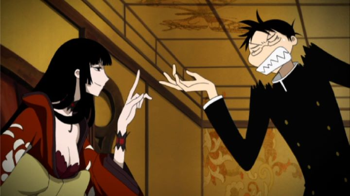

"xxxHolic" sounds like the type of show that would appeal to me perfectly. Ultimately, it is like two completely different shows. This is best represented in the opening and two endings, which couldn't be more different. The opening is mysterious, sexy, supernatural, and smart. The endings are simple, cute, j-pop and fun. Such is the show.Watanuki is a typical high school student, except he has been haunted by spirits and demons throughout his life. A strange gift to see them, and also to attract them. One day, he finds himself pulled forcibly into a strange shop, run by Yuko, a tall beautiful witch who sells "wishes," but for the right price and compensation. Watanuki ends up working for Yuko to pay off his debt, and enlists in help from crush Himawari and rival Domeki, in jobs that involve strange demons that affect the lives of various people. The plot sounds perfect for a episodic adventure, not unlike other anime like "Mushishi" or "Kino's Journey." But instead, most of the show is a very typical comedy/slice-of-life/coming-of-age show, as if "FLCL" accidently mixed in. Watanuki ends up doing cooking and other remedial chores more often than dealing with spirits, much to Yuko's delight. Watanuki's reactions and behaviour probably come across as the most annoying part of the show: unlike other characters, he will bend and wave his arms in crazy manners whenever he vents his frustration, or swoon and twirl like a ballerina whenever near Himawari. He also talks to himself a lot, very loudly, to the confusion and concern of others. That he is voiced by Todd Haberkorn in the dub makes his character enhanced, fitting the character but not in a pleasant manner. Some of other characters have good development, while others have virtually none, despite strong hints. It isn't all bad, though. About a third of the episodes will deal directly with spirits, myths, and demons, all of which are quite interesting. Also, the show is ultimately about Watanuki's "coming-of-age" and "growing up," a journey which it does portray well, and he has good character development along with the rest. The show will grow on you, eventually. Just not as much as I hoped. The visuals are something of a highlight. Based on CLAMP's manga, a group known for elongated character designs, all the characters look unique (and look like they are 6 to 8 feet tall). A handful of episodes are especially well animated, by Production IG of all people (this show doesn't look like anything else they've made). While unique, I can't say the visuals are perfect throughout, as some shortcuts are obvious. Music and dub are generally fitting.Given that a full second season continues the story, and has yet to be released in North America, I believe I'm not the only one to see lost potential in "xxxHolic." It feels like a awkward mismatch of two separate ideas. But it also feels like it is exactly what it wants to be, and its confidence will grow on some people. Also, CLAMP is known for crossovering characters in their other shows, so the typical OCD anime fan will want to watch all of their works to see what becomes of all the characters. Ultimately, this is one of the better CLAMP shows you can find, and if you step in with the right mindset, you may appreciate it. There is a feature film that did get an English release called "A Midsummer Night's Dream." It interestingly was made before the tv show, and focuses more on the supernatural elements and unique art style instead of the forced comedy of the show. I would generally recommend it over the show if your time was valuable.
- "Ani" More reviews can be found at : https://2danicritic.github.io/ Previous review: review_X_-_The_Movie Next review: review_Yellow_Submarine